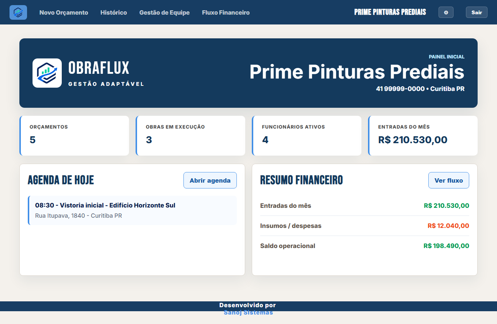

Pintores
Controle de propostas, equipes, cronogramas e materiais por serviço.
Gestão inteligente para prestadores de serviço que atuam em campo.
Migre para um sistema totalmente automatizado, inteligente e simples, com um fluxo dinâmico para vender, executar e acompanhar serviços sem depender de controles quebrados.
Do orçamento ao financeiro, cada etapa conversa com a próxima para sua empresa parar de apagar incêndios e começar a operar com previsibilidade.

Para todo tipo de prestador
O ObraFlux foi pensado para acompanhar diferentes modelos de operação, do atendimento ao cliente até a execução e o controle financeiro.
Controle de propostas, equipes, cronogramas e materiais por serviço.
Registro de etapas, insumos, medições e acompanhamento por obra.
Organização de demandas, ambientes, mão de obra e consumo de peças.
Planejamento de serviços técnicos, materiais e responsáveis por execução.
Um sistema flexível para empresas que precisam gerir múltiplas frentes, equipes, custos e entregas.
Do orçamento à entrega
O ObraFlux organiza as frentes que normalmente ficam espalhadas entre mensagens, planilhas e anotações.
Registre cliente, escopo, local e informações importantes para começar com clareza.
Organize equipe, materiais, etapas e previsões antes de colocar o time em campo.
Acompanhe status, etapas, responsáveis e histórico para reduzir ruídos na execução.
Preveja materiais, acompanhe consumo e enxergue custos com mais clareza.
Centralize receitas, despesas e informações importantes para decidir com segurança.
Veja andamento, custos e financeiro para manter a empresa no controle.
Módulos na prática
As telas abaixo mostram os principais módulos do sistema em uso: orçamento, equipe, obras, insumos e financeiro.
Planos
Todos os planos podem ser contratados mensalmente ou anualmente. No anual, o desconto é de 10%.
Ideal para prestadores que querem sair das anotações soltas e centralizar o básico da operação.
Anual com 10%: R$808,92/ano
Feito para empresas que têm mais frentes em andamento e precisam acompanhar custos com mais clareza.
Anual com 10%: R$1.294,92/ano
Para quem quer conectar operação, custos e financeiro em um fluxo mais previsível.
Anual com 10%: R$1.618,92/ano
A migração de dados físicos ou de planilhas pode ser cotada junto na solicitação de apresentação do ObraFlux. Esse serviço é opcional e possui valores separados dos planos.
Faça a captação de clientes diretamente do seu site, integrando um módulo adicional no ObraFlux. Ideal para conversão direta de clientes, esse módulo facilita o contato e triagem com o cliente.
Pronto para crescer com controle
Solicite uma apresentação e veja como o ObraFlux pode se ajustar ao seu tipo de prestação de serviço.
Solicitar apresentação